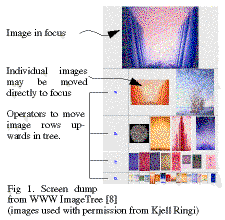
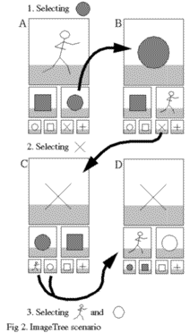

Creating Image Context using ImageTrees
Erik Wistrand
SSKKII and department of Computing Science
Göteborg University
S-412 94 Göteborg, Sweden
+46-31-772 1027
wistrand@cs.chalmers.se
Postscript version
ABSTRACT
Presenting artwork such as paintings, graphics and other
images over networks creates several problems, including
loss of context, loss of image resolution and bandwidth rate
problems. This paper presents a method, ImageTrees, for
displaying images which attempts to solve these problems.
Applications may be WWW applications, or other media
where image resolution and bandwidth problems arise.
Keywords
Visualization, ImageTree, dynamic layout, image display,
image context, art, WWW.
INTRODUCTION
During the World Championships in Athletics 1995 in
Göteborg, Sweden, was a large WWW service created,
including event results and tourist information. Kjell Ringi,
the artist of the official WCA posters made a simultaneous
exhibition, both on WWW and in a traditional gallery. The
traditional exhibition consisted of about 50 paintings and
graphics, about half of which where displayed on WWW.
The ImageTree display method was developed as a result
from the problems inherent in displaying high resolution
images using a relatively low bandwidth media such as
WWW.
Artwork as paintings are normally stored as high resolution
color images scanned from the original works. Hi-res images
typically have a resolution ranging from several hundreds
dpi and up, resulting in file size well over several megabytes.
When displaying these images on a computer screen, several
problems appear:
- Loss of image resolution.
Due to the limited screen space, images are often compressed
to low-res thumbnail versions.
- Bandwidth problems.
Depending on the image compression and resolution,
transfer to the viewer may be slow.
- Loss of image context.
Navigation between images becomes difficult if no visible
clues of the relations between images are present.
- Static perspective.
Interactive user exploration is hard to achieve compared
to a real-world gallery where the visitors may walk
around.
Suggested solutions to problem such as these, are for
example the Perspective Wall [3], various fisheye
views [5]
and 3D recreation of the image gallery. These solution,
however, relies on high bandwidth transfers to allow viewers
to explore and zoom images and are thus hard to implement
in relatively low bandwidth media as WWW applications,
even though attempts have been made [7].
THE IMAGETREE
The ImageTree is a space-efficient layout and scaling model
for 2D images, intended to be manipulated dynamically.
Figure 1 below shows an example ImageTree.

[ Large version
|additional example1
|additional example2
]
The images are positioned in a tree structure, with the image
in focus placed as the root node and the rest of the images
positioned as in a binary tree, with successive scale reduction
for each level. By selecting individual images or levels in the
tree, the tree may be rebuilt to place new images in focus.
Figure 2 shows an ImageTree scenario with seven images.
Four states, A, B, C and D are shown, where A is the initial
state - manually designed by the exhibitor presenting the
images. Three selections are made: 1, 2 and 3 which result in
an iterative refinement of a personal view of the total image
set.

The image in focus may act as a link to further information
about the specific image. In the implementation described
below, this information included a high-res zoomable image.
IMPLEMENTATION
The ImageTree system was implemented as a program for
World Wide Web usage [8], in C++. The current state as well
as the image set to use, were passed as part of the WWW
URL, allowing the system to work a arbitrary set of images.
The different image sizes were generated dynamically by the
WWW server in a first version, but this approach were later
modified to use pregenerated images, since dynamically
generating scaled images both interfered with server
capacity and the caching mechanisms in common WWW
browsers. Keeping image size low is important when
designing WWW applications, since small low-res images
are transferred much faster than large ones.
DISCUSSION
Hierarchical structures have been visualized in similar ways
as the ImageTree, e.g. using Treemaps [6], but a primary
goal of that method is to show the structure, not the
individual images. ImageTrees uses a tree structure only as
an aid in navigation, and users are encouraged to rebuild the
tree structure to suit their individual needs.
Other information display methods as the The Document
Lens [4], Pad++ [1] and fisheye
views [5] relies on high
speed graphics and image transfer to allow users to change
viewpoint in a static environment. ImageTrees compromises
between image size and transfer speed by using a
dynamically changing layout. The ImageTree method has
been tested in a WWW environment where both users and
the image artist expressed satisfaction with the method.
CONCLUSION
ImageTrees provides a personalized view of a possible large
image set, while keeping bandwidth requirement low. The
deepest levels in an ImageTree are not detailed enough to
give complete information about the images, but provide
context and promt users to explore further.
The successive scale reduction can be viewed as an
abstraction of real world perspective, where images far from
the viewer are placed at a deep level in the ImageTree.
Compared to a 3D-representations of a gallery, ImageTrees
uses tree depth as distance metaphor, while avoiding
traditional 3D problems such as overlapping and hidden
objects.
ACKNOWLEDGEMENTS
The inspiration for the work on ImageTrees was very much
depending on art material from Kjell Ringi and Gallery Æ.
The WWW application were in part supported by the WCA
Academy/Göteborg University/Chalmers and Telia.
REFERENCES
- Bederson, B. B., Hollan, J.D., Pad++: A Zooming Graph
ical Interface for Exploring Alternate Interface Physics,
Proc. of ACM CHI'94 Conf. on Human Factors in Com
puting Systems, vol 2, 315-316, (1994)
- Bier E.A., Stone, M.C., Pier, K., Fishkin, K., Baudel, T.,
Conway, M., Buxton, W., DeRose, T., Toolglass and
Magic Lenses: The See-Through Interface, Proc. of ACM
CHI'94 Conf. on Human Factors in Comp. Systems,445-
446 (1994)
- Mackinlay, J.D., Robertson, G.G., Card, S.K., The Per
spective Wall: Detail and Context Smoothly Integrated,
Proc. of ACM CHI'91 Conf. on Human Factors in Com
puting Systems, 173-179, (1991)
- Robertson, G.G., Mackinlay, J.D., The Document Lens,
Proc. of the ACM SIGGRAPH Symposium on User Inter
face Software and Technology, 101-108 (1993)
- Sarkar, M., Snibbe, S. S., Tversky, O. J., Reiss, P.,
Stretching the rubber sheet: A Metaphor for viewing
Large Layouts on Small Screens, ACM Proc. of the ACM
symposium on user interface software and technology, 81
- 91 (1993)
- Shneiderman, B. Tree visualizations with Tree-maps: a
2-d space-filling approach, ACM Transactions on graph
ics, vol 11, no 1, 92-99 (1992)
- Thompson Art Gallery, WWW URL http://www.crl.com/
~dow/gallery.html (1995)
- Wistrand, E., Kjell Ringi WWW Exhibition, WWW
URL http://www.carlstedt.se/ringi/ and
http://www95.telecom95.telia.com/ringi/ (1995)
Last modified: Tue Mar 26 13:19:39 MET 1996
{kind=link}
{kind=link}
{kind=link}
{kind=link}